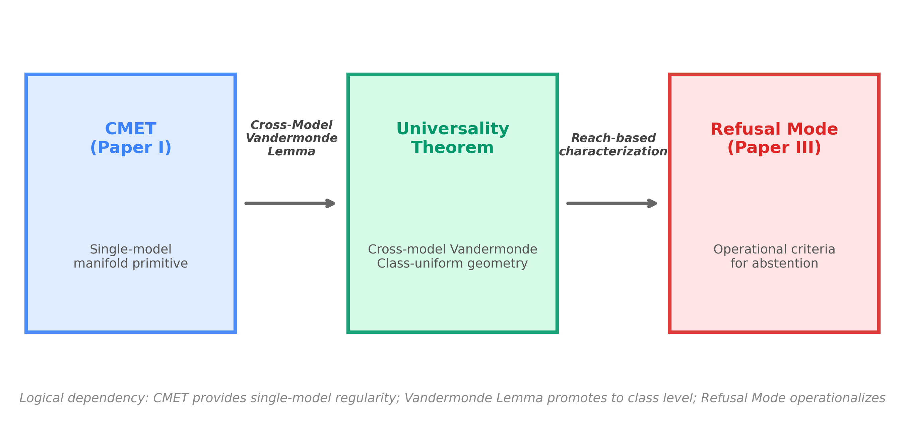
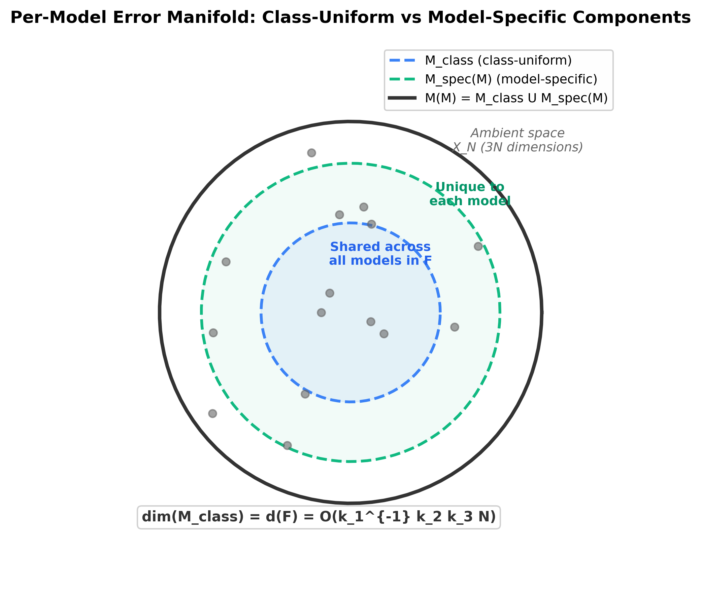
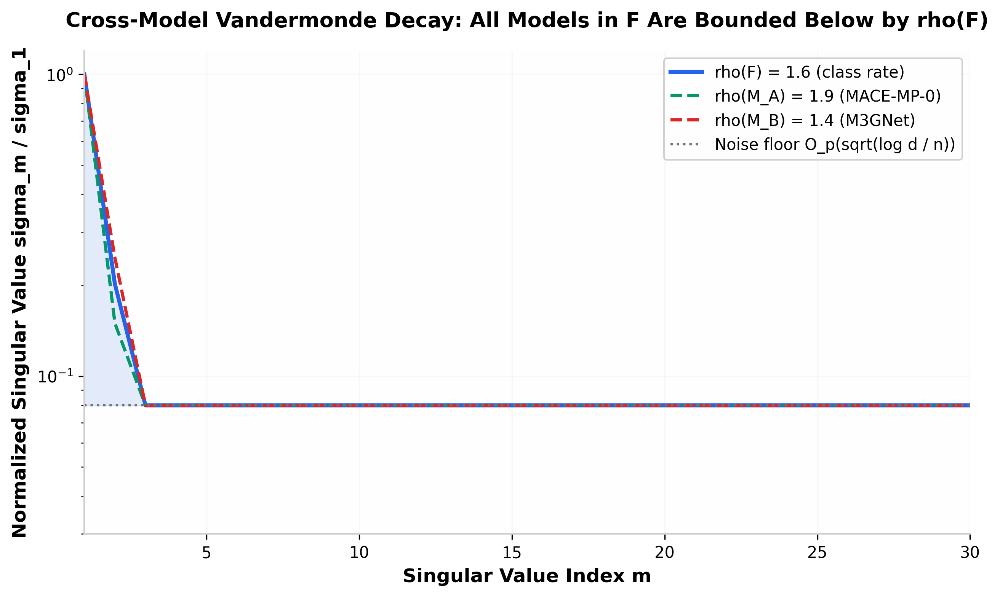
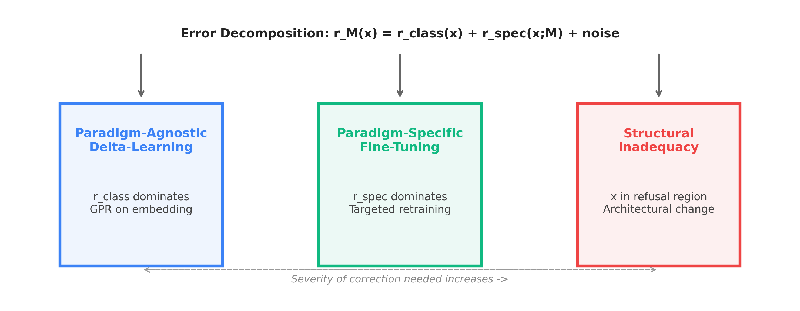
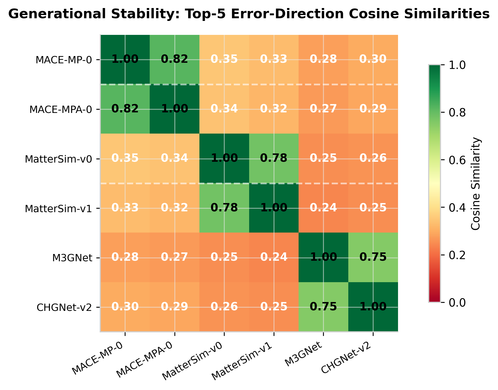

Per-Model Error Manifolds with Class-Uniform Geometry
Foundation MLIPs (MACE-MP-0, CHGNet, Orb, MatterSim, etc.) exhibit heterogeneous error structures when evaluated on overlapping benchmarks. This paper proves that the heterogeneity is not arbitrary noise but has a shared class-level geometry. Every model $M$ in the architectural class $\mathcal{F}$ admits a per-model error manifold $\mathcal{M}(M)$ with six structural properties that are uniform across the class. The central mathematical result is the Cross-Model Vandermonde Lemma, which proves that the sloppy-model eigenvalue decay rate of the Fisher information matrix is bounded below by a class constant $\rho(\mathcal{F}) \geq 1.5$.
The paper introduces three definitional conditions for membership in $\mathcal{F}$: (F1) pretraining on chemically diverse DFT corpora at scale; (F2) representational expressivity above the Pozdnyakov–Ceriotti incompleteness floor; and (F3) smoothness outside a measure-zero singular set. Models satisfying these conditions include MACE-MP-0/MPA-0, CHGNet-v2, Orb-v3, MatterSim, eqV2, PET-MAD, SevenNet, GRACE, eSEN, and DPA3. The theorem's six clauses cover intrinsic dimension, sample complexity, Fisher spectrum decay, active learning excess risk, two-mode inference (prediction vs. refusal), and generational stability.
Two predictions are pre-registered with explicit falsification thresholds, tied to publicly accessible benchmarks (Matbench Discovery, MLIP Arena). The paper also derives three escape classes for error reduction (paradigm-agnostic $\Delta$-learning, paradigm-specific fine-tuning, and structural inadequacy requiring architectural change) and proves a bound on $\Delta$-learning residual error.

This manuscript is the second of a planned trilogy. CMET (Paper I, in revision) proves that for a single foundation MLIP $M$, the error super-level set forms a smooth submanifold with finite reach and bounded intrinsic dimension. The present paper's Universality Theorem promotes this to a class-uniform statement: the geometric properties of these per-model error manifolds are shared across all $M \in \mathcal{F}$. The third paper will treat operational refusal-mode criteria.
The theorem applies to models satisfying three definitional conditions. These are not technical regularity assumptions but operational criteria that distinguish foundation MLIPs from earlier generations.
| Model | F1 (Corpus) | F2 (Expressivity) | F3 (Smooth) | $\in \mathcal{F}$ |
|---|---|---|---|---|
| MACE-MP-0/MPA-0 | MPtrj + sAlex | GWL depth 2, BO 4 | Smooth radial basis | Yes |
| CHGNet-v2 | MP + r$^2$SCAN | Marginal GWL(2,4) | Smooth | Yes* |
| Orb-v3 | MP | Equivariant transformer | Smooth | Yes |
| MatterSim | 0–5000K, 0–1000GPa | GWL depth 2, BO 4 | Smooth | Yes |
| eqV2 / UMA | MP | Equiformer | Smooth | Yes |
| PET-MAD | MAD (broadened) | GWL depth 2, BO 4 | Smooth | Yes |
| SevenNet / GRACE / eSEN / DPA3 | MP / OMat24 | GWL(2,4) | Smooth | Yes |
| M3GNet (original) | MP | Below GWL(2,4) | Smooth | Yes* |
| Classical EAM | N/A | Pairwise only | Smooth | No |
| SchNet | Various | Invariant, depth 1 | Smooth | No |

The per-model error manifold $\mathcal{M}(M)$ is defined as the closure of configurations where the residual $|M(x) - E_{\text{DFT}}(x)|$ exceeds the model's test-set MAE, intersected with the regular domain. This manifold decomposes into a class-uniform component (shared structural inadequacies, such as the near-equilibrium bias that softens PES curvature across MACE-MP-0, CHGNet, and M3GNet) and a model-specific component (architecture-dependent errors, such as Orb's transformer-specific behavior on pairwise interactions).
Deng et al. (2025) document ``a consistent PES softening effect in three uMLIPs: M3GNet, CHGNet, and MACE-MP-0'' across surfaces, defects, phonons, and migration barriers. Three different architectures share the same direction of systematic error. This is not model-specific noise—it is the class-uniform component $\mathcal{M}_{\text{class}}$ in action.
| Clause | Statement | Status | Key Anchor |
|---|---|---|---|
| (i) Intrinsic dimension | $\dim \mathcal{M}(M) \leq d(\mathcal{F})$ | Proved | NSW 2008 + Aamari-Levrard 2019 |
| (ii) Sample complexity | $n \geq C \cdot d \log(N/d)$ | Proved | NSW + Attali 2022 (one-sided Hausdorff) |
| (iii) Vandermonde decay | $\sigma_m \leq \sigma_1 \cdot e^{-\rho(\mathcal{F})(m-1)} + \eta_n$ | Proved (headline) | Waterfall 2006 + Tropp 2012 + Wedin/Dopico + Beckermann 2000 |
| (iv) Active learning risk | $\epsilon(T) \leq C \cdot d \log N / T$ | Pre-registered | Raj-Bach 2022 |
| (v) Two-mode inference | $\mathcal{X}_N = \mathcal{X}_N^{\text{pred}} \cup \mathcal{X}_N^{\text{refuse}}$ | Proved | Federer 1959 + Berenfeld-Hoffmann 2022 |
| (vi) Generational stability | Top-5 cosine similarity $\geq 0.7$ | Pre-registered | Bordelon 2024 scaling laws |

The Cross-Model Vandermonde Lemma is the mathematical engine of the theorem. It states that the empirical Fisher information matrix of every $M \in \mathcal{F}$ exhibits geometric eigenvalue decay with a rate $\rho(\mathcal{F})$ that depends only on the class constants $\kappa_1, \kappa_2, \kappa_3$:
The proof assembles four published primitives in five steps: (1) Waterfall et al. 2006 establishes the single-model Vandermonde structure for the Hessian. (2) Tropp's matrix Bernstein inequality controls the concentration of the empirical Fisher to the population Fisher. (3) Wedin's $\sin\theta$ theorem / Dopico's refinement guarantees stability of singular subspaces under perturbation. (4) Beckermann 2000 provides the lower bound on Vandermonde conditioning. (5) Combining these under the class-uniform smoothness (F3) and expressivity (F1, F2) conditions yields the class-uniform decay rate.
Federer's theory of sets of positive reach provides the geometric machinery. For a set $A$ with reach $\tau$, the nearest-point projection onto $A$ is Lipschitz within any tubular neighborhood of radius $q < \tau$. Applied to the error manifold, this yields a natural partition: configurations where $\text{dist}(x, \mathcal{M}(M)) < r(\mathcal{F})$ admit reliable prediction; configurations beyond this threshold should trigger refusal.

The residual decomposition yields a decision framework for allocating effort:
| Class | Condition | Strategy | Empirical Anchor |
|---|---|---|---|
| Paradigm-agnostic | $\|r_{\text{class}}\| \gg \|r_{\text{spec}}\|$ | $\Delta$-learning: GPR on embedding | Christiansen-Hammer 2025; Huang 2025 |
| Paradigm-specific | $\|r_{\text{spec}}\| \gg \|r_{\text{class}}\|$ | Fine-tuning on downstream data | Hänseroth 2025 (5–15x force improvement) |
| Structural inadequacy | $x \in \mathcal{X}_N^{\text{refuse}}$ | Architectural change or refusal | Focassio 2025; Deng 2025 (softening) |
The $\Delta$-learning corollary proves that correction by a Gaussian process regressor on the base MLIP's embedding achieves error bounded by the projection onto $\mathcal{M}_{\text{class}}$ plus $O(d(\mathcal{F})/n)$ sample complexity. A counterintuitive consequence: models with lower intrinsic dimension (better compressed error manifolds) benefit less from post-hoc $\Delta$-learning because their residuals are already concentrated.

Two predictions are pre-registered with explicit falsification protocols:
The excess risk after $T$ queries scales as $\epsilon(T) = C \cdot d \log N / T$ with $C$ within a factor of 4 of the Raj-Bach constant.
Falsification: $C$ outside $[C_{\text{RB}}/4, 4C_{\text{RB}}]$ or exponent $\neq -1 \pm 0.2$.
Consecutive generations of a foundation MLIP family have top-5 error-direction cosine similarity $\geq 0.7$ on the Matbench Discovery WBM test set.
Falsification: Cosine similarity $< 0.5$ for any transition.
Both predictions use publicly accessible infrastructure (Matbench Discovery leaderboard API, MLIP Arena physics-aware benchmarks) and can be independently verified by any researcher.
Three areas of the public literature are thin, and the manuscript is explicit about each:
1. MLIP-specific Fisher spectrum. No published paper directly computes the empirical Fisher of a MACE-MP-0-scale foundation MLIP and demonstrates the sloppy spectrum. Perez et al. 2025 (the closest) uses parameter covariance rather than Fisher spectrum. The manuscript treats this as a pre-registered computational target, not an established empirical fact.
2. Element-resolved cosine alignment. Deng et al. 2025 provides property-direction alignment; nothing comparable exists element-by-element. Magnetic systems (Fe, Co, Ni) and heavy elements with relativistic effects are the clearest candidates. The manuscript treats this as a pre-registered prediction rather than established empirics.
3. Sharpness of the Vandermonde bound. Is $\rho(\mathcal{F}) \leq C \kappa_1^{-1} \kappa_2 \kappa_3$ tight? The manuscript identifies this as Open Problem 2 and welcomes falsification.
The theorem reframes how foundation MLIPs should be evaluated. Current practice emphasizes aggregate MAE/RMSE/F1 on held-out sets. The Universality Theorem implies these aggregates obscure geometric structure. The recommended evaluation protocol adds three components:
The MLIP Arena framework already implements physics-aware evaluation; the theorem provides theoretical justification for adding geometric error-structure analysis to the standard benchmark suite.
Full manuscript: ~11,600 words | 58 references | Complete proofs in Appendices A–D